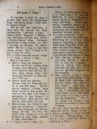
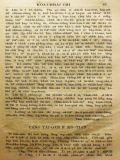
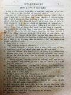
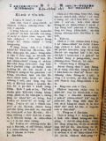

Languages
台文
｜
中文
｜
日本語
｜
English
字體
小
｜
中
｜
大
首頁
/
白話字數位典藏
白話字數位典藏全文檢索
查詢模式
選擇年代
清國時代(1885-1895)
日本時代(1895-1945)
戰後(1945-1969)
1885-1895
1896-1905
1906-1915
1916-1925
1926-1935
1936-1945
1946-1955
1956-1965
1966-1969
1970-1980
1980-1990
1990-2000
2000-2010
2010-
選擇文類
詩
散文
小說
戲劇
傳記
選擇作者
陳清忠
陳清義
編輯部
柯設偕
吳天命
明有德
偕叡廉
周天來
劉華義
王守勇
林茂生
陳添旺
王占魁
柯維思
賴仁聲
陳瓊琚
雪峰逸嵐
吳清鎰
郭水龍
蕭樂善
許水露
葉金木
陳金然
章王由
廖得
鄭連坤
潘道榮
楊士養
梁秀德
劉約翰
周淑慧
高金聲
林燕臣
黃六點
蔡愛義
許有才
主筆
巴克禮
陳鳩水
郭朝成
張基全
陳明清
陳能通
拾穗生
顏振聲
卓恆利
傳道局
胡文池
劉主安
鄭兒玉
Google Search
Yahoo Search
全部
刊名
標題
標題(教羅)
全文
全文(教羅)
作者
第60頁，共108頁(共2,148筆資料) 0.60570096969604sec
1
...
58
59
60
61
62
...
108
To Page
GO
文字列表
圖文列表
排序
日期
文類
刊名
作者
影像

[1926-6 芥菜子 文類-散文 作者-陳清義/Tân Chheng-gī]
(1)
世間的光 [ Sè-kan ê Kng ]
世間的光 佇約翰8章12節有記載主耶穌共眾人講一句話，講：「我就是世間的光。」 對古早到現今，有濟濟大人物予人稱做「人群的光。」親像東洋的孔子，釋迦，老子佮西洋的蘇格拉底等。總是這款的光有限，所照的地方無偌遠，無親像基督的光會照到通世間。所以伊講是世間的光無錯。 今伊的光是啥物款的光？ 1、 伊的光，是啟示的光。啟示啥物？ A、 啟示人捌上帝。基督猶未來以前，人雖然知上帝，總是無徹底；到基督來了，人通十分明白上帝是做人類的天爸。 B、 啟示人捌本身。世間人無明白家己是甚物人...
[1926-5 芥菜子 文類-散文 作者-陳清義/Tân Chheng-gī]
(2)
基督徒的品格 [ Ki-tok-tô͘ ê phín-keh ]
基督徒的品格 咱大家知影對反悔信主了後就是做基督徒，抑是講做拜上帝的人。有這項真要緊著照顧。彼項是啥物？就是品格。基督徒欲予伊品格較純全、較高尚；著學啥物人的模樣？著學主耶穌的模樣。因為伊有完全的品格通予咱學，以外無；總是咱欲學到親像主耶穌的品格，是真oh得。毋kú也是著出力來學，上少也著學3項。這3項是基督徒不能免著有--的。這3項是啥物？ 1、仁愛的品格。 論仁愛的心是基督徒所應該著有。主耶穌有行完全的仁愛，咱著出力來學。伊佇世間所行逐項事攏是用仁愛做根本，不論是教示人、醫治人、拯救人，攏是對伊仁愛的心來顯出。咱著學伊，就會得著仁愛的結果。照保羅所講，...
[1925-7 芥菜子 文類-散文 作者-陳清義/Tân Chheng-gī]
(3)
南勢番 [ LÂM SÌ HOAN ]
南勢番 這擺我去花蓮港赴奮興會，順機會我研究南勢番ê狀況，不止有趣味，taⁿ來排列寫佇下底，報予大家知影。 1. 論in ê祖先。In逐ê攏講毋知影，有一位ê博士去kā in抽血來研究，講是kap馬來族相同，按呢拍算是對南洋來khah大面，因為kap名稱也相合：佇花蓮港聽彼爿，逐ê攏叫in南勢仔。 2. 論in ê徛起。攏是平洋；In ê番社真清氣相，路真大條，埕真開闊，有竹圍、有樹真好看。厝，是用草起ê，低低；近來不止進步，有ê kah棟起，厝頂蓋鉛鉼不止...

[1925-7 芥菜子 文類-散文 作者-陳清義/Tân Chheng-gī]
(2)
東台灣Ê故典 [ TANG TÂI-OÂN Ê KÒ͘-TIÁN ]
東台灣Ê故典 佇教會內欲揀人當職，著真細膩。會友若有囝兒欲號名，也著真斟酌。這擺我kap郭希信、郭水龍、鐘天枝3位牧師去花蓮港赴奮興會，有聽著幾若項ê故典，不止心適；taⁿ來寫佇下底報予大家知影。 1. 王長老抽籤。佇某所在有一個長老姓王，伊ê家內有拄著破病，食藥、祈禱攏袂好；就去宮廟欲抽籤。有某傳道師知影就去問伊，「你kiám毋是王長老？」「是lah，我是bóng抽若定，我to無信。」 2. 偕牧師做小使。有一個姓偕，伊ê名號做牧師teh kā人提物，做小使。有一日，一个人teh問伊&ec...

[1925-10 芥菜子 文類-散文 作者-陳清義/Tân Chheng-gī]
(3)
論祈禱Ê要緊 [ LŪN KÎ-TÓ Ê IÀU-KÍN ]
論祈禱Ê要緊 人佇這世間，有身軀，有靈魂，兩項平平要緊。這個是咱信者所應該知--ê。身軀所著欠ê，就是食、穿、踮；這3項以外，猶有一項koh khah要緊--ê，就是空氣。這个空氣kap人生有大關係，拄拄親像水kap魚ê關係按呢！魚離水就死，人離開空氣也是按呢；這個;這個是人人所知影--ê.靈魂所著欠ê，就是上帝ê話，就是道，道，就是耶穌；按呢thang知耶穌kap咱人有關係。空氣會養飼人ê身軀，hō͘呼吸來thong到肺腑。耶穌會養飼人ê靈魂，予人倚靠伊來祈禱，...
[1928-10 台灣教會報/芥菜子 文類-散文 作者-陳清義/Tân Chheng-gī]
貧憚貓咬死鳥鼠 [ Pîn-toāⁿ Niau kā Sí Niáu-chhú ]
貧憚貓咬死鳥鼠 陳清義 1928.10.01 523卷(芥菜子第32號) p.17 佇阮的厝內老鼠真濟。常常來雞椆咬雞仔，致到雞仔飼攏袂起。阮就共人討貓仔來飼。攏總有飼三隻，一隻較少年，兩隻較老。彼隻較少年的，常常看伊咬著老鼠teh弄，弄了若siān就食，亦有時看伊干焦咬死，攏無食。猶彼兩隻較老的 貓攏毋捌看見伊咬死鳥鼠teh食nā-tiāⁿ。俗語講，貧憚貓，咬死老鼠，果然有影。 近來教派那濟來台灣，有的對支那來，有的對內地來。我叫是欲來相佮做工佇台灣，來救台灣四百萬的百姓，其實to毋是按呢。詳細共伊研究看bāi，to是欲來牽piān-iûⁿ，佮咬死鳥鼠。 所用的手段真粗，攏是...
[1926-9 芥菜子 文類-散文 作者-陳清義/Tân Chheng-gī]
(1)
莫得驚 [ Bo̍h-tit kiaⁿ ]
莫得驚 啟示錄1章17節。約翰佇Poa̍t-mô͘海嶼，得著主的啟示。有看見主，真驚，就仆佇伊的跤前親像死。主用手摸伊講，莫得驚。約翰佇世間的時，常常倚佇主的身邊，攏無驚，怎樣這擺看見伊的面，就驚到欲死；紲仆佇地裡？因為彼時主的 容貌佮佇世間的時有koh樣。就是伊的本性顯露佮上帝相同。所以約翰看見擋袂牢。總是主有安慰伊，予伊得著安心。咱踮這世間，有濟濟項予咱的心驚惶，咱著徛在。主也欲安慰咱，共講莫得驚。來講3款，排列佇下底。 1、 莫得驚罪過未無去。 咱已經知罪過佇咱的心內，真厲害，親像瘡毒佇人的體中。佳哉上帝有差伊的囝耶穌降世替咱贖罪，咱對信靠伊的日起，就成做無罪的人。...
[1926-9 芥菜子 文類-散文 作者-陳清義/Tân Chheng-gī]
(4)
基督教佮孔子教的研究 [ Ki-tok-kàu kap Khóng-chú kàu ê Gián-kiù ]
基督教佮孔子教的研究 近來濟濟所在teh興起孔教。照in teh誇口講，現今的社會遐爾腐敗，若無孔子的道理來挽回，無法得。佇台北市 teh設法欲起聖廟，不止濟人寄付，氣力連鞭便。閣捌聽見in也捌批評基督教。今我愛將兩教所研究的幾若項來寫佇下底。 1、 論兩教的出產地。 基督教出產佇猶太國。孔子教出產佇中國。國，雖各樣；洲，就是相同。人常常講，基督教是西洋的宗教；其實是代先發展對西洋去nā-tiāⁿ。 2、 論兩教來台的沿革。 基督教來台灣有60外年久，對彼tia̍p到今，相接紲無隔斷。卻照歷史來研究，1626年拄300年前，有荷蘭人來佈教，彼tia̍p是明朝天啟皇帝坐位 6年的...
[1926-10 芥菜子 文類-散文 作者-陳清義/Tân Chheng-gī]
(2)
研究耶穌的祈禱會捌耶穌是上帝 [ Gián-kiù Iâ-so͘ ê kî-tó oē bat Iâ-so͘ sī Siōng-tè ]
研究耶穌的祈禱會捌耶穌是上帝。 論世間人捌耶穌，無攏siāng款：-有的捌伊是人；有的捌伊是神；有的捌伊毋是人也毋是神，是摩西的模型。 捌伊是人毋是神的，是明明講伊是約翰的囝nā-tiāⁿ，毋是上帝的獨生囝。這个是研究無真，佮對無著方面來看，所以講按呢。譬喻人愛研究觀音山，若對坪頂彼方面來看，穩當是講kē-kē無秀氣；若對淡水彼方面來看，穩當會講真?，真懸真好看。人看耶穌猶原是按呢；若kan-ta看耶穌對馬利亞來生，猶原著穿衫，著食奶，猶原漸漸大漢，猶原有做工有lim食，無愛研究別款，自然看伊時人。 若對祈禱彼方面來研究，毋但看伊是人nā-tiāⁿ，著信伊是上帝。論耶穌的祈禱，敢毋是佮...
[1926-10 芥菜子 文類-散文 作者-陳清義/Tân Chheng-gī]
(2)
世界第一 [ Sè-kài tē-it ]
世界第一 (對新聞翻譯) 1、世界第一長的鐵路是佇美國，有二十四萬五千里的遠。 2、世界第一大的火山是佇墨西哥的國，懸有一萬七千七百四十八尺，出火的口三里，深一千四百尺。 3、世界第一大的戲台是佇法國的首府巴黎，總面積有四百二十六萬四千的平方尺。 4、世界第一大的吊橋是佇美國，長約有五千七百八十尺。 5、世界第一長的磅空是佇意大利國，長有九里半，空口闊二十八尺，懸有十六尺。 6、世界第一長的地下鐵路是佇英國的首府倫敦，有二十一哩半的英哩。...
[1926-11 芥菜子 文類-散文 作者-陳清義/Tân Chheng-gī]
(2)
研究耶穌的神跡會捌耶穌是上帝 [ Gián-kiù Iâ-so͘ ê sîn-jiah oē bat Iâ-so͘ sī Siōng-tè ]
研究耶穌的神跡 會捌耶穌是上帝 耶穌佇世間的時，毋但四界傳道理，也行濟濟神跡。伊所行的神跡，毋是親像奇術家的款，予人看心適，攏是用道德做目的，來叫醒眾人，予伊就近上帝，也通講是替上帝來宣教：閣顯明有上帝的權佇teh。按呢通知耶穌原本是上帝，今對伊所行的神跡來研究，看伊有顯出啥物權親像上帝。 1、 有顯出宰治天地的權親像上帝。看伊佇加利利海，予風湧恬靜的事就知影，伊若無宰治天地的權風佮湧穩當毋順伊。既然會順伊，咱通捌伊是上帝。 2、 有顯出管轄萬物的權親像上帝。看伊佇底加波利用5个餅2 尾魚予5千人食到飽，閣佇加納用水變做酒，這層事，就知伊有管轄萬物的權，親像上帝，予...
[1926-12 芥菜子 文類-散文 作者-陳清義/Tân Chheng-gī]
(2)
研究耶穌的教示，會捌耶穌是上帝 [ Gián-kiù Iâ-so͘ ê kà-sī, oē bat Iâ-so͘ sī Siōng-tè ]
研究耶穌的教示，會捌耶穌是上帝。 咱愛捌耶穌原本是上帝毋但對研究伊的祈禱，伊所行的神跡，就對伊的教示這方面來研究，也會捌伊。伊三年久，周圍四方，傳道教示人，佮經學士的教示攏無相同。有一擺佇迦百農會堂教示人，聽的人大奇怪，因為聽伊的教示有大權佇teh，無親像經學士用摩西的律法教示人，專專愛諂媚人予人歡喜；看見人有過失，毋敢干證--伊。耶穌的教示毋是按呢，勇敢直講，權柄顯現。對按呢來看予人通知伊的權是佮上帝平等，原本是上帝。 論耶穌的教示有上帝的權佮有上帝的口氣，愛排列幾若款佇下底：－ 1、耶穌講，「凡若著磨艱苦pē重擔的，著就近我，我賞賜恁平安」。閣講「人喙焦著就近我lim...

[1927-1 芥菜子 文類-散文 作者-陳清義/Tân Chheng-gī]
(2)
基督的神tek [ Ki-tok ê sîn-tek ]
基督的神tek 以賽亞9 章，6節。 論這節的聖冊，是先知以賽亞，稱讚基督的神tek。 伊講幾若所在患難的百姓得欲得著德聖，是因為有一个做王--的得欲出世。伊佇默示中看見，親像已經降生。 有人講這个是以賽亞看見太子 Hi-se-ka，約略十外歲，心意良善，預料伊做王，會得著tāi-kong，對按呢就想到基督親像已經佇世間。古早人濟濟用目下的人物以及事情做預想來指起後日的事。總是詳細來研究伊所講，的確著指起彌賽亞才著，因為所尊稱的名，別人當袂起，佇舊約中的 uî-giân基督，無有比這个較明亮。閣7百年後，天使傳言救主已經降生，博士來朝拜伊，眾人所看見，所講，佮以賽亞所看見所講相同。以...
[1927-3 芥菜子 文類-散文 作者-陳清義/Tân Chheng-gī]
(2)
路得拾麥 [ Lō͘-tek Khioh be̍h ]
路得拾麥 路得記2章17節。 路得佇園裡拾到黃昏的時，後來將所拾的來拍，得著大麥有六斗。佇聖經中所記載的好好查某囡仔，路得一个在內。伊的孝行實在真可取，會堪得做人的模樣，對伊的丈夫過身了後，伊甘願佮伊的 ta-ke
[1927-8 芥菜子 文類-散文 作者-陳清義/Tân Chheng-gī]
(2)
成聖的要緊 [ Chiâⁿ-sèng ê iàu-kín ]
成聖的要緊 羅馬12章1節。 保羅苦勸羅馬的兄弟愛in著成聖也是苦勸咱著成聖。論這个愛咱成聖的道理，通講是基督教的教示，第一順全，儒教雖罔tiàm佇Sek教，道教的頂面，iáu-kú這款的道理袂得著詳細，雖罔聖人，也毋敢凊彩講。保羅佇遮敢明明講，可見伊有得著這个地步就是對聖神來成就的。 論成聖甚物意思。 成聖，就是聖，善，攏齊備，無閣犯罪無入迷惑，這款的工夫毋是人的氣力所會成的，獨獨聖神會成的。聖神會造就咱，予咱到佇成聖的地步。按呢咱人m̄通倚靠家己的氣力，來向望成聖，著倚靠聖神的扶助。 論成聖甚物人著有。 就是基督徒所著有的，怎樣按呢，因為聖經明明講。揀召恁的就是聖，恁也著聖，人...
[1927-9 芥菜子 文類-散文 作者-陳清義/Tân Chheng-gī]
(2)
信心得救佮賞罰行為 [ Sìn-sim tit-kiù kap Sióng-hoa̍t hêng-uî ]
信心得救佮賞罰行為 兄弟ah！我今仔日對恁所講的題目，是真要緊：咱大家來信基督耶穌，是愛靈魂得著救。耶穌講，信的人免到滅無反轉得著永遠活。約翰3：16。信的人已經出死入活。約翰5：24。按呢信就得著救，是主耶穌基督的應允，也是上帝的旨意，毋是人的話，永遠袂會改變。咱若信伊，永久靠得chū。有人問講，去信耶穌是真容易，總是信耶穌以後，行為一舉，一動：攏愛親像耶穌的款，這是為難，卻有影。行為是信心的果子。得著報賞的代價佮得救的大道，毋通相參，得救的大道佮報賞，根本不同，聖經中有講真清楚。看路加23：39-43。Kiông-tô͘的得救。哥林多前書5：1-5。受趕出的教會犯罪的信徒得著救。...
[1927-10 芥菜子 文類-散文 作者-陳清義/Tân Chheng-gī]
(3)
世界的結局 [ Sè-kài ê kiat-kio̍k ]
世界的結局 我有讀這本細本冊，Parker博士所著的，論起世界結局這層事，不止有你。這个世界實在真大，頂面是天，下面是地，袂會無起頭，也袂會無續尾。 這个問題科學家，宗教家，攏有辯論了，逐个攏集in所講--的；總是照基督教聖經所記載，這个天地萬物，以及地球上的人群，或是空中的世界，宇宙間的日，月，星辰，無毋是上帝所創造的。經過hiah濟年星辰，地球的運行無煞，萬物的生活佇彼个中間，對在早到這霎，這个是世界的起頭，真明。既然有起頭自然的確有路尾，所以世界結局的問題，是人類所著研究的材料，總是這个代誌體真大，設使若毋是上帝的啟示，kan-ta倚靠人的智識來推測無法得。聖經是上...
[1927-10 芥菜子 文類-散文 作者-陳清義/Tân Chheng-gī]
(2)
迷信快傳染 [ Bē-sìn khoài thoân-jiám ]
迷信快傳染 佇士林附近有一個細的山仔，號做芝山巖頂面有起一間廟是服事開漳聖王，月外日前佇山腳的石頭邊有出一káng水泉，人共伊號做仙水。 就四界謠言講不論甚物病若啉彼个水，就會好，對彼霎了後，就有人去遐入水。日日ná濟人，對各方面來，大家去遐入水，紲去廟裡燒金，現時每日有幾若千人去，我也去共伊看覓，果然oe oe陣陣往來不絕，有的對火車，有的對自動車，有的對人力車，真心適，真鬧熱，欲去入水，著輪班，等真久，著接一choā長長親像鬧熱時排佇停車場接一choā長長去鉸單的款，逐人所得著的水是2，3，兩nā-tiāⁿ，無通予人濟，逐人得著彼个水看著ka-ná寶貝，佇路邊有人搭店仔...
[1927-11 芥菜子 文類-散文 作者-陳清義/Tân Chheng-gī]
(2)
約翰對基督的天職觀 [ Iok-hān tuì Ki-tok ê Thian-chit koan ]
約翰對基督的天職觀 這个約翰是耶穌所疼痛的學生，常常佇耶穌的身邊，不止捌耶穌的代誌。伊講，「這个tō成人的身軀，」就是指起基督。伊所擔當的責任，就是入世間的 使命，對本質上來講，是上帝的顯現者，對位格上來講，是上帝的獨生囝。約翰愛將基督做人類佮上帝的中間所盡的天職，對3方面的觀察中來完全講明予人通激起對基督的觀念，會真切。Taⁿ基督的天職，照約翰所看是甚物款，排列3項佇下底。 1. 是上帝的羊羔： 人類的罪惡，袂會隱囥，上帝的公義也毋通廢除。古代用犧牲的祭禮，是有表基督救贖的恩，所以基督擔當上帝的使命，來成肉體到這世間，是欲擔當世人的罪孽，來成上帝羊羔的職務，這个就是神人間中保的責任，...
[1927-5 芥菜子 文類-散文 作者-陳清義/Tân Chheng-gī]
(2)
予人和平的人有福氣 [ Hō͘ lâng hô-pêng ê lâng ū hok-khì ]
「予人和平的人有福氣」 馬太5 章 9節。 主耶穌佇世間的時，有周圍四方傳道理，有一擺佇迦百農附近的所在，看見眾人規陣就近伊。就peh上天然的教壇來說教，題目是論福氣，攏總有8 个。這tia̍p愛將第7 个來論，佇漢文的聖經是講和平的人有福氣。照本文是講予人和平的人有福氣，按呢較著。 論予人和平這4 字，是好字，閣再真好聽。是上帝的聖旨，也是主耶穌的教示，伊是和平的人君，降世做人，做一chân大事業，予世間人佮上帝和好。也予萬國的人通歸一體大家相疼結和平的果子，來合上帝的旨意，所以予人和平的，就是承受上帝的聖旨，順趁基督的教訓。 按呢咱人毋但家己行和平，也著幫贊人予人來行和平，是真要...
第60頁，共108頁(共2,148筆資料)
1
...
58
59
60
61
62
...
108
To Page
GO
數位典藏國家型科技計劃
拓展台灣數位典藏計畫
版權所有 國立台灣師範大學 台灣文化及語言文學研究所©2008
10610 台北市和平東路一段162號│TEL 02-7734-5516│Fax 02-2358-2461
計劃簡介
典藏特色
執行架構
計畫典藏數位化流程
成員介紹
台灣白話字發展簡介
巴克禮牧師與《台灣教會公報》
廈門話字典-杜嘉德
白話字教學-打馬字
中國南方白話字發展
台灣基督教長老教會簡表
台灣基督教長老教會教會歷史委員會
《北部台灣基督長老教會教會ê歷史》
關於陳清忠
白話字文學：台灣文學的早春